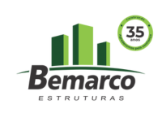

Bemarco Estruturas
Empresa com mais de 30 anos no mercado, desenvolve soluções integradas em estruturas pré-fabricadas de concreto e metálicas. Mescla conhecimento nos segmentos de mercado em que atua sendo referência no fornecimento de estruturas mistas, com atendimento rápido e objetivo dentro das necessidades de cada cliente.
Com a credibilidade construída pela sua trajetória e a qualidade garantida pelo selo de excelência ABCIC (Associação Brasileira da Construção Industrializada de Concreto), com auditorias feitas pela L. A. Falcão Bauer.. Em nosso site é possível constatar diversas obras realizadas para os mais diversos segmentos, portes e projetos arquitetônicos.
Acesse o Site →